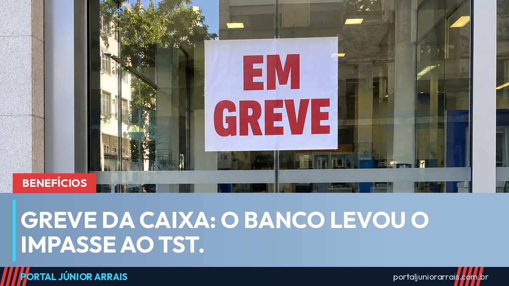

Greve da Caixa: banco leva o impasse ao TST e as agências seguem fechadas

A Caixa Econômica Federal decidiu levar a greve dos seus empregados ao Tribunal Superior do Trabalho (TST). O banco anunciou na quinta-feira, 24 de setembro, que vai pedir um dissídio coletivo — ou seja, que a Justiça do Trabalho resolva o que a negociação não resolveu. Enquanto isso, a paralisação, que começou em 10 de setembro, continua por tempo indeterminado e as agências seguem fechadas.
Por que a negociação travou
O ponto que emperra o acordo é o plano de saúde dos empregados, o Saúde Caixa. A categoria já recusou três propostas; a última foi rejeitada em assembleia no dia 21, como mostramos quando 59,3% votaram contra. Um dos itens mais criticados é a coparticipação na consulta de pronto-socorro, que subiria de R$ 75 para R$ 120.
Os empregados dizem que, com os custos novos do plano, o reajuste salarial de 4,6% da categoria bancária seria praticamente engolido. A Caixa afirma que fez 54 rodadas de negociação e incorporou pedidos dos trabalhadores. Em nota, disse que recorre ao TST em busca de "segurança jurídica". Até o fechamento desta matéria, o tribunal não havia divulgado data para audiência.
O que funciona e o que não funciona
- Fechado: atendimento presencial nas agências.
- Funcionando: aplicativos, internet banking, caixas eletrônicos, lotéricas e correspondentes Caixa Aqui.
- Pagamentos mantidos: o Bolsa Família de setembro segue o calendário até o dia 30, e o INSS de setembro, que começou a ser pago em 24 de setembro, vai até 7 de outubro. Saques do FGTS também continuam liberados pelos canais digitais e pelas lotéricas.
Quem depende da agência para desbloquear cartão, resolver senha ou retirar benefício sem cartão é quem mais sente a greve. Nesses casos, as lotéricas e os caixas eletrônicos resolvem boa parte do saque, mas não todos os problemas de cadastro.
Cuidado com golpe
Com as agências fechadas, aparecem pessoas se apresentando como "funcionário da Caixa em home office" que oferecem desbloquear o cartão, destravar o benefício ou fazer o saque no seu lugar — em troca de senha, foto do cartão ou um Pix de "taxa". Nenhum órgão do governo nem a Caixa cobram taxa ou pedem senha por telefone, WhatsApp ou visita.
Se o seu benefício ficou travado durante a greve, ou se houve saque ou desconto que você não reconhece, procure um profissional de sua confiança para analisar o caso com a documentação em mãos.
Conteúdo informativo — não substitui orientação individualizada sobre o seu caso.
Júnior Arrais · Editor do Portal Júnior Arrais
Comunicador de Ubá (MG). Escreve todos os dias sobre benefícios sociais, INSS, trabalho e economia do dia a dia, a partir do Diário Oficial, de portarias e de fontes oficiais, em linguagem simples. Conheça a linha editorial e a política de correções do portal.